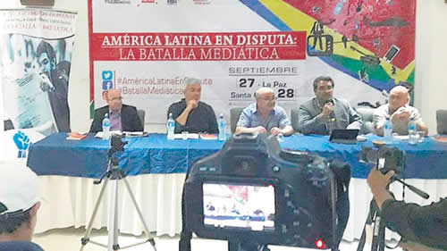

Real Chubut - Agencia de Noticias


“Manipulación mediática sin precedentes”

Reunión de periodistas latinoamericanos en Bolivia. Las mentiras del caso Zapata, de la niña enterrada en México y la persecución a dirigentes populares.
“Constatamos la gravedad de la manipulación mediática sin precedentes en relación a los líderes y movimientos populares de América latina mediante campañas de difamación como la acontecida en Bolivia en las semanas previas al 21 F” señala en uno de sus puntos la declaración del seminario sobre medios de comunicación en América Latina que sesionó el 27 de septiembre en La Paz, Bolivia y el 28 de septiembre en la ciudad de Santa Cruz de la Sierra en ese país. El 21 de febrero de 2016 se efectuó un referéndum en Bolivia para la reelección del presidente Morales y los medios opositores inventaron la existencia de un hijo no reconocido por el presidente, que a raíz de esa operación perdió la votación.
Como coincidieron los participantes en el seminario “América Latina en disputa: la batalla mediática”, la campaña de las principales empresas de medios bolivianos contra el presidente Evo Morales, no se diferenció de las operaciones mediáticas contra otros líderes populares de la región, como en Venezuela contra Nicolás Maduro, en Brasil contra Lula y Dilma y en Argentina contra Cristina Kirchner.
Los medios opositores inventaron la existencia de un hijo no reconocido del presidente, cuya madre habría sido, según ese relato, Gabriela Zapata, empresaria representante de la firma china CAMC. Después de un año de campaña incesante de los medios, se comprobó que el niño había sido un invento para afectar la integridad moral de Evo Morales y hacerlo perder las elecciones.
En Bolivia no existen conglomerados mediáticos de la potencia de la Red O Globo de Brasil, Televisa de México, o del Grupo Clarín en Argentina y, sin embargo, esa operación demostró el poder de manipulación para la construcción de una realidad puramente virtual que es usada para combatir y desprestigiar a gobiernos de raigambre popular. Para la mentira del caso Zapata contribuyeron también la embajada norteamericana, las agencias internacionales de noticias y la CNN, que por esa razón perdió un juicio con el presidente Morales.
En el Seminario participaron Atilio Borón, Juan Manuel Karg y Luis Bruschtein, de Argentina; Hugo Moldes, Emilio Rodes y Raúl García Linera, de Bolivia; Otavio Antunes, de Brasil; Carlos Antonio Lozada, de Colombia; Randy Alonso, de Cuba; Luis Hernández Navarro, de México, Katu Arkonada, del país vasco y Erika Ortega Santoja, de Venezuela.
Hernández Navarro, encargado del área editorial y de opinión del diario La Jornada, de México, describió a su vez la forma en que Televisa inventó la existencia de una niña superviviente entre los escombros durante el último terremoto en la ciudad de México. Según el relato, la niña se llamaba Frida Sofía y los medios estuvieron horas y horas dramatizando su situación. La historia fue seguida por millones de mexicanos, pero Frida Sofía nunca existió y ni siquiera había una alumna con ese nombre en esa escuela. Era un invento de Televisa para favorecer la imagen del ministro de Educación de ese país, Aurelio Nuño, uno de los aspirantes a convertirse en candidato presidencial.
La Jornada, de México, con el que PáginaI12 mantiene acuerdos de colaboración, perdió a dos de sus periodistas asesinados por los narcos. En las conclusiones se condena la actitud de los medios concentrados “que agrandan los problemas y las dificultades que existen en Venezuela…a la vez que callan las masacres en curso, como en México, en donde sólo en 2016 hubo 3803 desaparecidos”. La declaración denunció también el ocultamiento por parte de los multimedios argentinos de la gravedad de la desaparición forzada de Santiago Maldonado al igual que la prisión de la parlamentaria del Mercosur, Milagro Sala, sin condena. La posverdad fue abordada por los panelistas como posible sólo a partir de la existencia de medios concentrados o cartelizados. Se habló de la imagen absurda y multiplicada de una excavadora en el desierto para encontrar un supuesto Tesoro de la familia Kirchner. Y también de las patrañas de los medios corporativos sobre Santiago Maldonado para diluir la responsabilidad del gobierno de Mauricio Macri.
Otavio Antunes, de la Fundación Perseu Abramo y asesor de medios del PT de Brasil, advirtió sobre las amenazas de un golpe militar para impedir la candidatura presidencial de Lula quien, a pesar de la poderosa campaña de difamación en su contra, mantiene una gran popularidad. Y fue interesante la exposición del colombiano Lozada, el comandante de las FARC, miembro de la dirección nacional de esa fuerza, quien tendrá a su cargo el área de medios que organizarán los ex insurgentes, ahora convertidos en partido político. Alrededor de 150 ex guerrilleros están siendo formados en comunicación como parte del plan de reinserción y se organizarán en una cooperativa.
Se planteó que muchas veces los grupos más vulnerables a las operaciones mediáticas son aquellos que fueron favorecidos por las políticas distributivas de gobiernos populares. “Grandes masas que estaban en la pobreza pudieron convertirse en capas medias, o tener el nivel adquisitivo de las capas medias, e inmediatamente asumen la ideología de la burguesía y se convierten en opositores a los gobiernos que los favorecieron” reflexionó uno de los panelistas que, a su vez reivindicó la necesidad de medios contrahegemónicos. Se aprobaron otras definiciones, como la que impulsó Atilio Borón, para apoyar que el 9 de Agosto sea declarado “Día Internacional de los Crímenes Estadounidenses contra la Humanidad”, por la fecha en que EEUU arrojó su bomba atómica sobre la ciudad de Nagasaki.
El Seminario fue organizado por movimientos sociales los que, al igual que gran parte de la sociedad boliviana, reclaman que se permita la reelección de Evo Morales, un reclamo que fue tomado por los participantes del encuentro que culminó con dos reuniones enriquecedoras con el presidente y con su vice Alvaro García Linera.
Fuente: Pagina 12